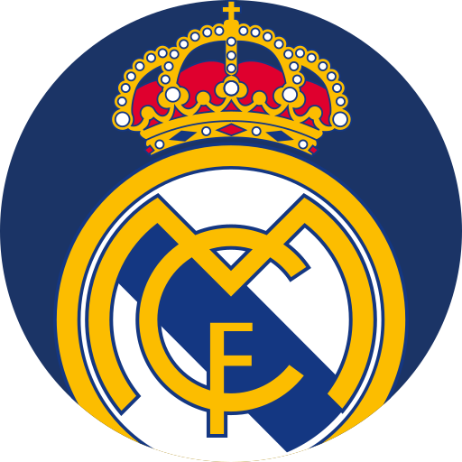

Era una forma de expresar, desde buen principio, la vinculación del club con la ciudad que le vio nacer.

El blanco, azul y naranja representan a la ciudad, a los incondicionales del Real Madrid y a la historia del club.
Messi se unió al Barcelona cuando era joven y rápidamente demostró su destreza en el regate, su impresionante visión del juego y su habilidad para anotar goles desde posiciones difíciles. A lo largo de su carrera con el club, ha acumulado innumerables títulos y premios, incluyendo múltiples títulos de La Liga, Copas del Rey, Ligas de Campeones de la UEFA y varios premios Balón de Oro.
Jesús Navas es una figura icónica y querida en el Sevilla, donde ha pasado la mayor parte de su carrera profesional. Se unió a la cantera del club en su juventud y, tras debutar con el primer equipo en 2003, rápidamente se estableció como una prometedora promesa del fútbol español. Su habilidad para desbordar por la banda con velocidad y destreza, además de su precisión en los centros al área, lo convirtieron en un elemento clave en el juego del equipo.
Cristiano Ronaldo llegó al Real Madrid en el verano de 2009 procedente del Manchester United, en una transferencia récord en ese momento. Desde su llegada, el delantero mostró un nivel excepcional en cuanto a habilidades futbolísticas y un voraz apetito por el gol. Con una combinación de velocidad, técnica, potencia y un instinto asesino frente a la portería, Ronaldo era una amenaza constante para las defensas rivales.
Neymar es un talentoso futbolista brasileño, conocido por su habilidad para regatear, su creatividad en el campo y su capacidad goleadora.
Ivan Rakitic es un futbolista croata reconocido por su visión de juego, precisión en los pases y versatilidad en el mediocampo. Ha jugado para clubes como el Barcelona y el Sevilla.
James Rodríguez, talentoso mediocampista colombiano, jugó para el Real Madrid desde 2014 hasta 2017. Su precisión en el pase y habilidad para marcar goles lo destacaron en su paso por el club.